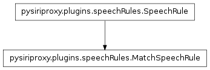
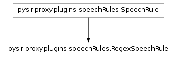

The speechRules module
The speechRules module contains classes pertaining to creating
speech rules.
-
pysiriproxy.plugins.speechRules.createSpeechRule(ruleClass)
Create a function decorator which acts as an spech rule filter. When
used this decorator will filter any object that does match the given
SpeechRule object.
-
pysiriproxy.plugins.speechRules.matches(text)
The function decorator used to match recognized speech exactly (not
case sensitive).
- text – The text used to match the recognized speech
-
pysiriproxy.plugins.speechRules.regex(exp)
The function decorator used to match recognized speech using a
regular expression (not case sensitive).
- exp – The regular expression used to match the speech
The SpeechRule class
-
class pysiriproxy.plugins.speechRules.SpeechRule(text, *args, **kwargs)[source]
The SpeechRule class encapsulates a speech rule and provides the ability
to test the recognized speech against expected text to determine if
this SpeechRule applies to the recognized speech.
-
test(text)[source]
Test the text to see if it matches our expected text.
Note
This function should return True if the SpeechRule applies
to the recognized speech, otherwise it should return False.
Note
This function should be overriden by concrete SpeechRules.
- text – The recogized speech to test
-
text[source]
Get the text for this SpeechRule.
The MatchSpeechRule class

-
class pysiriproxy.plugins.speechRules.MatchSpeechRule(text, *args, **kwargs)[source]
Create a SpeechRule to match text exactly.
-
test(text)[source]
Test the text to see if it matches our expected text.
- text – The recogized speech to test
The RegexSpeechRule class

-
class pysiriproxy.plugins.speechRules.RegexSpeechRule(regex, ignoreCase=True)[source]
Create a SpeechRule to match text using a regular
expression.
-
test(text)[source]
Test the text to see if it matches our expected text.
- text – The recogized speech to test